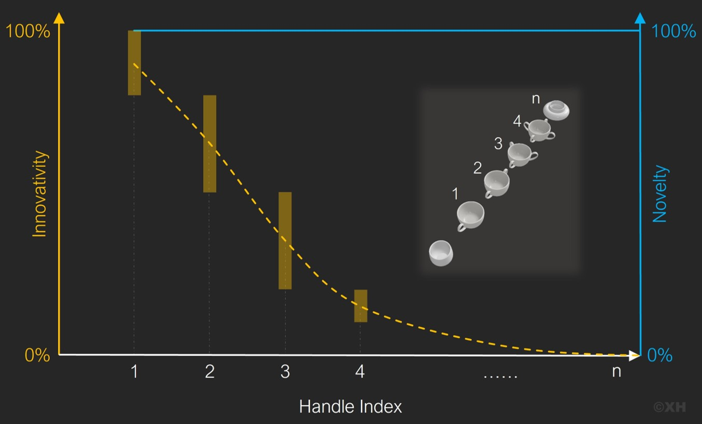

Innovation
Innovation is important to the evolution of technology throughout human history. Numerous examples of innovations exist that have greatly impacted the world. The history of innovation is a long and fascinating path, with significant developments spanning from ancient times to the present day.
Some of the earliest technical innovations include the invention of the man-made materials and tools. The Industrial Revolution of the 18th and 19th centuries marked a major turning point in the history of technical innovation, leading to new innovations in fields like manufacturing, transportation, and energy. The 20th century saw continued advancements, including the major developments in the fields of advanced materials, electronics, computing, aviation technology and communication technology. In recent years, technological innovations have been driven by the rapid advancement of computing and the rise of the internet, leading to the development of new technologies such as portable consumer electronics, artificial intelligence (AI), the Internet of Things (IoT), blockchains. The role of innovation in human society will continue to be vital in the future.
Despite the numerous examples of successful innovations, there are also many instances of useless ‘innovations’ that do not provide any real benefit or value to society and may even have negative consequences. These so-called ’innovations’ are often marketed as the next big thing, promising to revolutionise an academic or industrial field. However, upon closer inspection, they often turn out to be overhyped and underwhelming. In some cases, these innovations may distract from more important and favourable advancements and waste valuable resources.
In my opinion, real innovation is not merely about being new or solely emphasising novelty. It is about creating meaningful and positive improvement and shape the future.
Real innovation should solve a problem, meet a need, or address a challenge in a novel and effective way, with minimised additional negative features. It should also be sustainable, scalable, and have the potential to create real value. Moreover, innovation should have a lasting impact and stand the test of time. It should not be a fad or a fleeting trend, but a solution that can be adapted and evolved to meet varying needs and requirements.
The idea that there is a concern over improving the efficiency of determining the quality of innovative claims should be pointed out. This is because the process of innovation is constantly evolving and becoming more complex, making it necessary to develop new and improved methods for evaluating claims of innovations.
There are several well-known tools utilised in the project development process, such as SWOT analysis for situational assessment, TRLs for technology readiness assessment, and more. These tools are not only easy to use but also provide effective guidance for project management. Therefore, the methods for evaluating claims of innovations should be simple and straightforward, similar to those evaluating tools.
The objective of this article is to present an approach for assessing the innovativity of new ideas or concepts, and to provide illustrative examples of iconic cases. The proposing method is intended to serve as a straightforward and indexable tool for project management, decision-making, and research in fields that rely on innovation.
Innovativity estimation
It is important to assess new products and services critically to determine if they bring real benefits to society and have the potential to make a positive impact. While some innovations may seem exciting and attract attention, they may not be sustainable or have a meaningful impact on our lives.
So, how do we determine if an innovation is good or bad? The following examples could help to propose a numerical evaluation method to gauge innovativity.
Using the example of cup handles, it illustrates the different scenarios that often arise when something new is claimed.
One handle on a cup is a good innovation that provides a practical way of holding a hot or cold drink without directly touching the surface. This is the most common design and has proven to be a useful solution.
Two handles on a cup are the second level of innovation. This design creates a new handle to the one handled cup, making it easier to hold larger or heavier cups with both hands. This creation is limited to specific uses, such as for trophies, but still considered as a meaningful innovation.
Three handles on a cup, however, are not as practical. It is difficult to imagine a scenario where this design would be useful. The people behind this kind of innovation may have hypothetical explanations.
Having four handles on a cup is an even more unfavorable situation, but it may still be observable in extremely rare scenarios.
By that analogy, adding an excessive number of handles would eventually become equivalent to adding nothing new.
From these examples, we can see that the key factor in evaluating an innovation is the justification of its usefulness versus its actual usefulness. While each additional handle may be novel, it does not necessarily increase the innovativity.
It seems that using numbers as handles, as shown in the examples above, is a relatively simple approach to creating an indexable system for representing innovations, but it appears that there is no established equivalent for such ‘handle index’ to assess the quality of an innovation. Generally, a higher score on the index suggests a lower degree of innovativity.
However, to apply the proposed 'handle index' for assessing innovativity in real-life scenarios, it is necessary to determine an equivalent for the index and establish an equation that incorporates the relevant variables that could impact the degree of innovativity.
The equation for innovativity (IHI) estimation can be expressed as:
IHI = ⌊10 × F1 × F2 × F3 × F4 × F5⌉ / 10 × 100%
where F1, F2, F3, F4, and F5 are expressed as numbers between 0 to 1 or binary values and have specific definitions.
F1 is represented by F1 ∈ [0, 1] and refers to the degree of problem identification. The identified problem has to be specific and unamendable basis of evaluating the following aspects F2-5.
F2 is a binary variable, represented by F2 ∈ {0, 1}, which indicates the degree of novelty in the proposed solution, i.e., the solution is either new or pre-existing.
F3 is represented by F3 ∈ [0, 1] and reflects the solubility of the problem.
F4 is represented by F4 ∈ [0, 1] and indicates the degree of verification for the proposed solution.
Finally, F5 is represented by F5 ∈ [0, 1] and measures the degree of acceptability of the compromised features if the proposed solution is implemented.
The formula presented above can be utilised to estimate the degree of innovativity (IHI) of a new idea or invention, which can be then represented by an equivalent to the number of cup handle(s). For instance:
Handle Index 1 represents IHI ∈ [100%, 80%]. Creations classified as Handle Index 1 have the highest innovativity rating, similar to the first invention of a handle for a cup.
Handle Index 2 represents IHI ∈ (80%, 50%]. These categorized creations are considered the second level of meaningful innovation, just like a cup with two handles.
Handle Index 3 represents IHI ∈ (50%, 20%]. Creations falling under Handle Index 3 should be reviewed with caution as they are at the edge of real good innovation and can be defined as the creation with low innovativity.
Handle Index 4 represents IHI ∈ (20%, 10%]. Creations classified as Handle Index 4 typically have low levelled innovativaties, but can still be created purely for fun or applied in very rare situation.
Handle Index >4 represents IHI ∈ (10%, 0]. Creations in this category are considered the useless innovations, similar to cups with more than four handles.
 Fig 1. Handle Index.A demonstration of the proposed tool is available through the Innovativity Estimator, which has been designed as an example of the tool discussed above. This tool is available for both personal and commercial use at no cost.
This approach enables the assessor to determine the level of innovativity of the new idea or concept with relative ease.
A commonly used method to assess the level of scalability or maturity of technologies is the Technology Readiness Levels (TRLs) approach, developed by NASA. This method has proven to be highly effective in guiding technology development. However, the TRLs have limitations when it comes to estimating the level of innovativity for a newly proposed technology, especially in its early stages of development.
Since the estimation of innovativity is equally as important as the estimation of maturity for technology development, the Handle Index proposed in this article has the potential to bridge the gap between the evaluation of a creative idea and the implementation of its realisation during the entire technology development process.
Case study on innovatitivy
Technology innovation requires the creation and implementation of new and advanced technology in various fields. There are some previous iconic cases worth to learn. The development of innovative technology typically occurs in two main environments: academic research and industrial development. In this particular context, the first three cases (Cases 1-3) are all examples from the industry, the latter two cases (Cases 4-5) focus on academic innovations and the last case (Case 6) is a combination of both.
One could argue that estimating innovativity is not always necessary since most innovations are typically evaluated either through the patent process or by means of academic publication. However, the following examples illustrate how this approach can sometimes be inadequate in reality.
Case 1: Juicero
The Juicero was a ‘high-tech’ juicer startup that used pre-packaged juice bags to make fresh, cold-pressed juice at home. However, it failed to achieve widespread adoption due to its high price and criticisms that it was overly complex and unnecessary. Additionally, a scandal in 2017 revealed by Bloomberg that the juice bags could be squeezed by hand, making the ‘high-tech’ juicer unnecessary. The failure of the Juicero underscores the importance of creating products that address a real need in the market and avoiding over-engineering products that are not significantly better than existing solutions.
This specific case illustrates as an example of a scenario in which no real problem existed, but rather a hypothetical issue was proposed. If a comprehensive analysis based on the innovativity estimation was carried out as proposed in this article, it would result a Handle Index >4.
Case 2: ‘Bad blood’
The Theranos was founded by Elizabeth Holmes in 2003, and the company claimed to have developed a revolutionary technology that could perform a wide range of blood tests using just a single drop of blood. Holmes became a media darling and a tech industry superstar, with Theranos being valued at $9 billion at its peak. However, in 2015, investigative journalist John Carreyrou began to report on the company's practices and raised doubts about the effectiveness of its technology. It was eventually revealed that the technology behind Theranos' blood-testing machines was not as revolutionary as the company had claimed. Instead, the machines relied on existing technology and were not capable of performing the wide range of tests that the company had promised. In 2018, Holmes was charged with multiple counts of fraud and conspiracy to commit fraud. She is currently facing trial in the United States. For further information on this topic, I recommend checking out the book "Bad Blood: Secrets and Lies in a Silicon Valley Startup" written by John Carreyrou.
The Theranos case is a cautionary tale about the dangers of hype and inflated claims in the tech industry. When attempting to pass off pre-existing solutions as novel innovations, so-called inventors often resort to convoluted and opaque descriptions of their technology. It also highlights the importance of due diligence and independent verification when evaluating new technologies and innovations, and based on the evaluation of Tharanos's innovativity, it is without a doubt that their 'innovation' has a Handle Index > 4, as they have made fabricated claims about their novelty.
However, obtaining independent verification is not always a straightforward process, whether the claims are made by industrial players or discussed in academic publications, as will be discussed later in this article.
Case 3: Smart phone
The launch of the iPhone in 2007 by Apple ushered in a new era of mobile handsets, setting the standard for modern smartphones and changing the way we interact with our devices. The iPhone's influence can still be seen today in the design and functionality of many of the world's most popular smartphones. Despite its eventual success, the smartphone’s battery design were some major concerns for many users.
If an innovation assessment had been carried out at the time of the iPhone's initial launch, it would probably have resulted in a Handle Index score of 3 or higher. This was primarily because certain compromised features, such as battery design, were not widely accepted by mobile phone users. However, as time went on, consumers became more willing to accept the trade-off of, such as, battery-related concerns in exchange for a more comprehensive and interactive smartphone experience. Looking back now, there is no doubt that the innovation of the iPhone would have been estimated as a very low Handle Index and considered as a remarkable innovation.
This case is a typical example that illustrates how the Handle Index can change over time, depending on the stage of technological development and the current circumstances. Therefore, it would be more useful to view the Handle Index as a guidance tool for technology development rather than a simple scoring system.
Case 4: Graphene doping
Graphene is an extraordinary two-dimensional material consisting of a single layer of carbon atoms organized in a hexagonal pattern. The groundbreaking discovery of graphene has led to its potential applications across various fields, sparking a rapid surge in the number of researchers eagerly pursuing graphene-related studies, especially in electrical research.
A group of scientists have published an article in ACS Nano titled ‘Will Any Crap We Put into Graphene Increase Its Electrocatalytic Effect?’ in which they added bird droppings (guano) to graphene to show the meaningless nature of the never-ending co-doping of graphene. The study was intended to highlight the meaningless nature of studies trying to improve graphene's electrocatalytic efficiency by endlessly adding other elements. The authors argue that researchers should focus on understanding the fundamentals of the material’s electrocatalytic abilities rather than constantly adding dopants to graphene to enhance its role as an electrocatalyst. The addition of guano to graphene increased its electrocatalytic ability but the study's point was to stop this never-ending doping madness and encourage people to be more critical in general.
This case highlights a common issue in which many so-called innovations in academic research are similar to the act of adding extra handles to a cup that already has one or two. The criticised approach in this case is simply only seeking novelty without addressing the identification of real problems.
If the Handle Index tool were utilised, certain evaluation factors might result in a low degree of innovativity (Handle Index >4), such as poor problem identification and it also supposed to have low level of verification. However, why have so many similar graphene doping studies been published via the peer-review verification system before the article in this case brought up the issue? I believe the following case may provide some insight into this question.
Case 5: Research publication
In 2016, Monya Baker published an article in Nature titled ‘1,500 Scientists Lift the Lid on Reproducibility’
More than 70% of researchers have tried and failed to reproduce another scientist's experiments, and more than half have failed to reproduce their own experiments. Those are some of the telling figures that emerged from Nature's survey of 1,576 researchers who took a brief online questionnaire on reproducibility in research.
This is not the first time concerns have been raised about publication quality (Ioannidis, 2005). In some cases, poor academic "innovation" has even led to tragedy.
One may wonder how those bad ‘innovations’ make their way out of the lab. Several factors could contribute to weak innovation in academic research: 1) academics often face pressure to publish frequently to secure funding and promotions, 2) many researchers prioritise novel findings over replicating or building upon previous studies, 3) research institutions and funding agencies may reward researchers for publishing flashy or attention-grabbing work rather than addressing real-world problems or advancing the field, 4) the peer-review process may sometimes fail to detect low-quality research or inadvertently favour trendy topics, and 5) researchers and journals might be more inclined to publish positive results over negative or inconclusive findings, resulting in the publication of more novel but potentially less impactful research.
Hence, rather than relying on a novelty-based evaluation system, there is a genuine need for a Handle-Index-like innovation assessment tool to tackle this issue within the academic research environment. By using Handle Index for a claimed innovation, even if a researcher's personal bias results in an inability to accurately identify the real problem or correctly assess the degree of solubility, the degree of verification will eventually receive lower scores as unresolved criticisms accumulate over time, both from within and outside the academic sphere, despite the publication having already passed the peer-review process.
Furthermore, this case also highlights the importance of interactive demonstrations and exhibitions in real-world scenarios as the most effective means of verifying the solution for a clearly identified problem.
Case 6: mRNA vaccines
mRNA vaccines are an innovative approach to vaccine development that use messenger RNA to instruct cells to produce specific proteins that trigger an immune response. Although the technology faced challenges such as the fragility of mRNA molecule and concerns about safety and efficacy, scientists continued to develop effective delivery systems. The emergence of COVID-19 provided an opportunity to test mRNA vaccines, and they have been highly effective in preventing the disease, playing a critical role in the global effort to end the pandemic.
This case demonstrates how the innovativity of a validated innovation can be significantly influenced when the scope of the identified problem is altered. In this instance, the problem was narrowed to specifically targeting COVID-19, driven by external factors. As a result, it is crucial to consider additional analysis for the routes to achieve a lower Handle Index when evaluating an early-stage innovation. This will ensure that innovation is assessed under varying conditions, rather than solely based on the innovativity estimation result, particularly for those innovations with a Handle Index of 3.
Conclusions
The Handle Index method proposed in this article can be utilised to evaluate new ideas, early-stage innovations, and published innovative claims.
The Handle Index is a dynamic tool capable of providing an innovativity estimation at any stage of an innovative technology's development. The lower Handle Index represents higher innovativity.
Early-stage innovations rarely have a low Handle Index (<3), but their potential can be inferred from the innovativity estimation process. Alongside the Handle Index outcome, supplementary evaluations of factors that may positively or negatively influence innovativity in the future should be carried out.
Increasing the number of independent estimations can help reduce subjectivity when using the tool.
Postscript
After developing this initial version of the proposed example tool, I invited my wife, an experienced scientific researcher herself, to test its effectiveness in estimating innovativity. At first, she questioned the tool's practicality and expressed scepticism about whether the Handle Index would offer a meaningful assessment. Consequently, based on her initial subjective doubt, the Handle Index displayed a score of 4, reflecting poor performance primarily due to a low degree of verification, as she was utilising it as a third party.
Nonetheless, the high Handle Index score aligned with her expectations for a subjective evaluation of the tool, which addressed her reservations and the foundation of her subjective critique. Subsequently, when she re-evaluated the innovativity using the same tool, it hence yielded a low Handle Index.
The ‘in-house family trial’ gave me initial assurance that the tool is effective, but it also highlighted the need for more specific guidance on its usage to reduce subjective influence and concentrate on objective, data-driven responses, in order to prevent potential inaccuracies.
I hope that the idea suggested in this article will ultimately achieve Handle Index 1 as more users adopt it over time.
I am also wondering: ‘Will this method be limited to estimating technological innovativity only?’